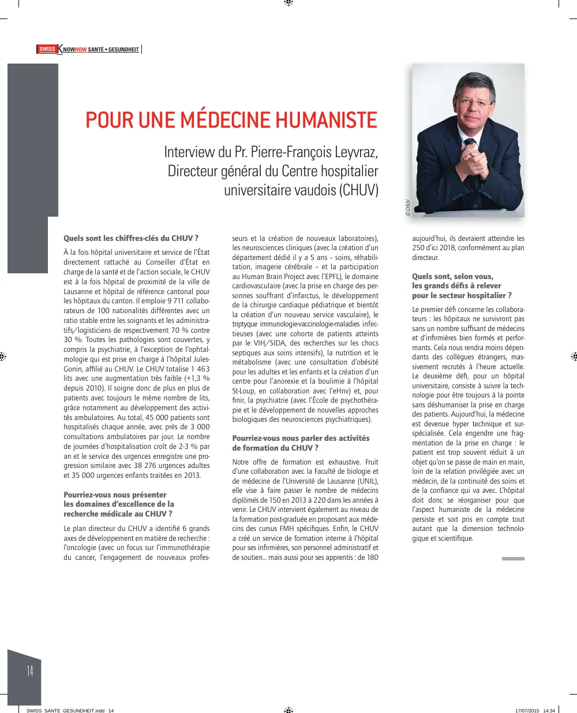

Interview · Swiss Knowhow – Santé • Gesundheit 2015
Pour une médecine humaniste
Quels sont les chiffres-clés du CHUV ?
À la fois hôpital universitaire et service de l’État directement rattaché au Conseiller d’État en charge de la santé et de l’action sociale, le CHUV est à la fois hôpital de proximité de la ville de Lausanne et hôpital de référence cantonal pour les hôpitaux du canton. Il emploie 9 711 collaborateurs de 100 nationalités différentes avec un ratio stable entre les soignants et les administratifs/logisticiens de respectivement 70 % contre 30 %. Toutes les pathologies sont couvertes, y compris la psychiatrie, à l’exception de l’ophtalmologie qui est prise en charge à l’hôpital Jules-Gonin, affilié au CHUV. Le CHUV totalise 1 463 lits avec une augmentation très faible (+1,3 % depuis 2010). Il soigne donc de plus en plus de patients avec toujours le même nombre de lits, grâce notamment au développement des activités ambulatoires. Au total, 45 000 patients sont hospitalisés chaque année, avec près de 3 000 consultations ambulatoires par jour. Le nombre de journées d’hospitalisation croît de 2-3 % par an et le service des urgences enregistre une progression similaire avec 38 276 urgences adultes et 35 000 urgences enfants traitées en 2013.
Pourriez-vous nous présenter les domaines d’excellence de la recherche médicale au CHUV ?
Le plan directeur du CHUV a identifié 6 grands axes de développement en matière de recherche : l’oncologie (avec un focus sur l’immunothérapie du cancer, l’engagement de nouveaux professeurs et la création de nouveaux laboratoires), les neurosciences cliniques (avec la création d’un département dédié il y a 5 ans – soins, réhabilitation, imagerie cérébrale – et la participation au Human Brain Project avec l’EPFL), le domaine cardiovasculaire (avec la prise en charge des personnes souffrant d’infarctus, le développement de la chirurgie cardiaque pédiatrique et bientôt la création d’un nouveau service vasculaire), le triptyque immunologie-vaccinologie-maladies infectieuses (avec une cohorte de patients atteints par le VIH/SIDA, des recherches sur les chocs septiques aux soins intensifs), la nutrition et le métabolisme (avec une consultation d’obésité pour les adultes et les enfants et la création d’un centre pour l’anorexie et la boulimie à l’hôpital St-Loup, en collaboration avec l’eHnv) et, pour finir, la psychiatrie (avec l’École de psychothérapie et le développement de nouvelles approches biologiques des neurosciences psychiatriques).
Pourriez-vous nous parler des activités de formation du CHUV ?
Notre offre de formation est exhaustive. Fruit d’une collaboration avec la Faculté de biologie et de médecine de l’Université de Lausanne (UNIL), elle vise à faire passer le nombre de médecins diplômés de 150 en 2013 à 220 dans les années à venir. Le CHUV intervient également au niveau de la formation post-graduée en proposant aux médecins des cursus FMH spécifiques. Enfin, le CHUV a créé un service de formation interne à l’hôpital pour ses infirmières, son personnel administratif et de soutien... mais aussi pour ses apprentis : de 180 aujourd’hui, ils devraient atteindre les 250 d’ici 2018, conformément au plan directeur.
Quels sont, selon vous, les grands défis à relever pour le secteur hospitalier ?
Le premier défi concerne les collaborateurs : les hôpitaux ne survivront pas sans un nombre suffisant de médecins et d’infirmières bien formés et performants. Cela nous rendra moins dépendants des collègues étrangers, massivement recrutés à l’heure actuelle.
Le deuxième défi, pour un hôpital universitaire, consiste à suivre la technologie pour être toujours à la pointe sans déshumaniser la prise en charge des patients. Aujourd’hui, la médecine est devenue hyper technique et surspécialisée. Cela engendre une fragmentation de la prise en charge : le patient est trop souvent réduit à un objet qu’on se passe de main en main, loin de la relation privilégiée avec un médecin, de la continuité des soins et de la confiance qui va avec. L’hôpital doit donc se réorganiser pour que l’aspect humaniste de la médecine persiste et soit pris en compte tout autant que la dimension technologique et scientifique.
Texte paru dans Swiss Knowhow – Santé • Gesundheit 2015, p. 14, tel que publié dans l'édition imprimée. En cas d'écart, la version imprimée fait foi.
Photos
Articles

Interview · texte intégralPour une médecine humaniste
Interview du Pr. Pierre-François Leyvraz, Directeur général du Centre hospitalier universitaire vaudois (CHUV)
Un centre consacré à l'étude du métabolisme
Département de physiologie de l'Université de Lausanne (version anglaise incluse)
 Publireportage · texte intégral
Publireportage · texte intégral